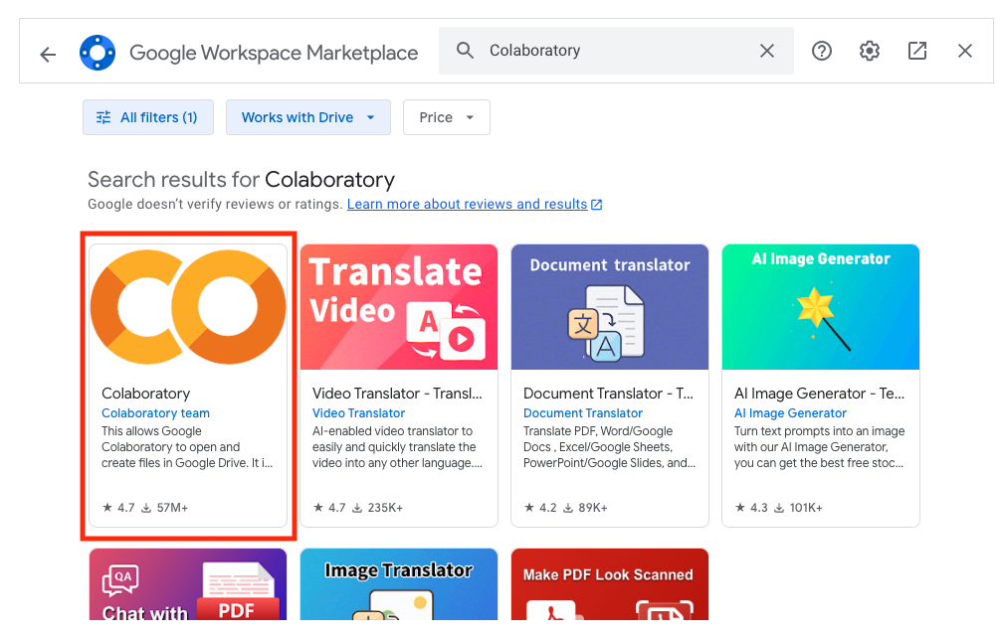
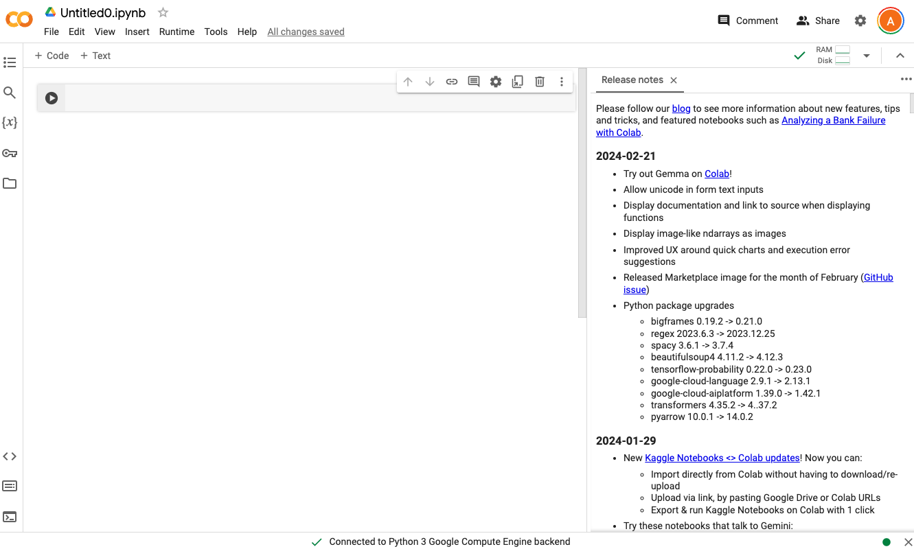

2.1. Introducing Colaboratory#
Colaboratory or Colab is a free cloud-based platform provided by Google that allows user to write and execute Python code in a browser environment. The main advantages of Colab are:
Free cloud-based computing: Colab allows you to run a Python Jupyter Notebook directly in your browser, without the need for any setup or installation! The code runs on Google’s powerful cloud infrastructure.
Collaboration: Similarly to Google Docs, multiple users are able to work simultaneously on the same notebook, enabling real-time collaboration.
Pre-installed libraries: Colab comes with many popular Python libraries pre-installed, including NumPy, Pandas, Matplotlib, among others. This allows users to get started more quickly, eliminating the need to spend time installing these libraries.
Integration with Google Drive and GitHub: Colab creates notebooks on Google Drive allowing users to store these files in their respective folders on Google Drive. It also supports integration with GitHub, enabling version control and easy sharing of notebooks with the broader community. We will look at how to do this later on in the course.
In this course, we are going to use Colab to create Jupyter Notebooks. There are several other tools that one can use to create Jupyter Notebooks and we will be looking at creating Jupyter Notebooks in PyCharm, for those who prefer to use an Integrated Development Environment (IDE) to code.
2.1.1. Creating Jupyter Notebooks in Colab#
To create a Jupyter Notebook in Colab:
Log in to your Google account.
Select or create the folder where you want to create your Colab document.
Select New|More and choose Colab. If Colab is not on your list, this means that the Colab app is not installed in your Google account. To install Colab, select New|More|Connect more apps. In the Google Marketplace window, search for Colab, select the Colaboratory app as shown below, and follow the installation instructions. 
Once installed, to create a new Colab document, in your Google Drive select New|More|Google Colaboratory. This creates a new Colab document as shown below: 
The Colab document is automatically renamed as
Untitled. Note also that it has the.ipynbextension. Jupyter Notebook files have a.ipynbfile extension. To rename the document, click on the file name at the top-left hand side on the document and rename it tonotebook1.ipynb.
Well done, you have just created your first Jupyter Notebook! The Notebook is currently empty, so let’s get started with filling this up.
2.1.2. Jupyter Notebook Cells#
A Jupyter notebook is composed of a list of cells. You can add as many cells as you need in your Notebook. In Colab, cells can be of two types:
Code
Text
2.1.3. Running Jupyter Notebooks#
When creating a new Colab document, the notebook is initialised with an empty code cell.
In the code cell displayed, enter the following
print("Hello Jupyter!")Click on the Play icon in the left gutter of the cell to get the output of the code displayed underneath the code cell. The output should be as follows:
{kind=link}